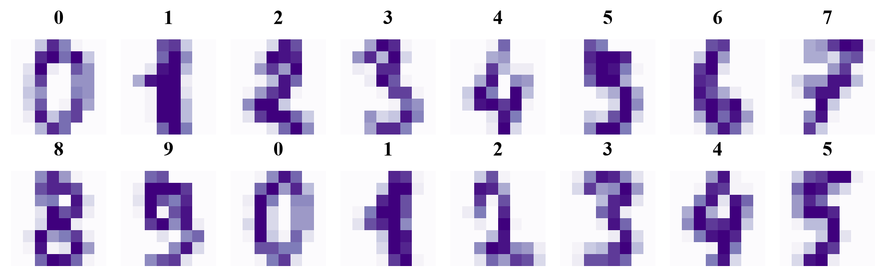
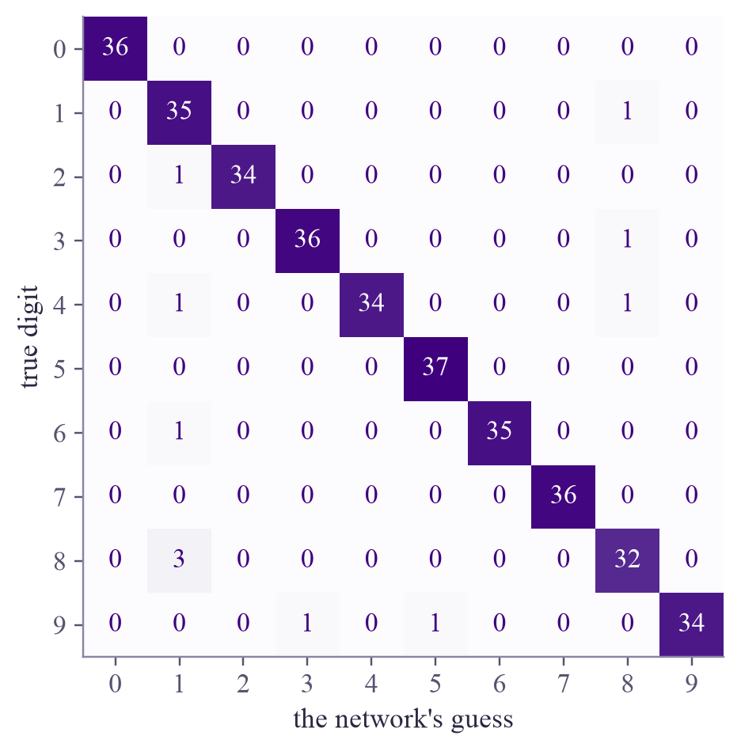
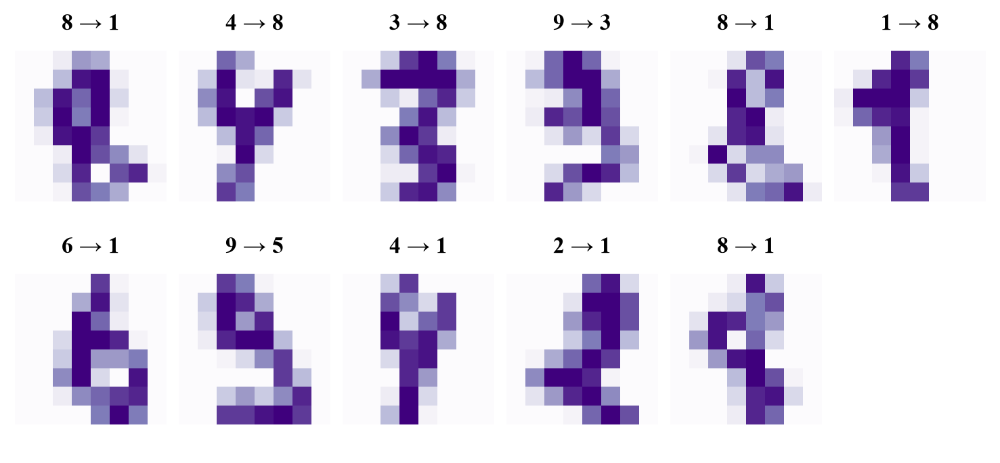

images: (1797, 8, 8) as feature vectors: (1797, 64) pixel values from 0.0 to 16.0

Train a network that reads digits written by 43 people, test it honestly, then see how it does on your own handwriting.

Reading handwritten digits is the classic first job for a neural network: in the 1990s, networks like this one read the numbers on bank checks and envelopes. Today you'll train one, then hand it a pen.
Each image is pixels, with values from 0 (blank) to 16 (full ink). Flatten it into a vector of 64 numbers, and it's just a data point in 64 dimensions, like the iris flowers in week 1 had 4.
The network:
The softmax and cross-entropy from week 3 handle the ten classes. The training loop uses all of this week's habits: mini-batches of 32, Adam, and early stopping on a validation set. The test set stays closed until the very end.
One honest warning: the images were made in a particular way. Each digit was scanned, fitted into a box (filling its full height, centered), and each block was counted, giving the grid. The widget shrinks your drawing the same way, but a finger on a screen is not a pen on paper. When test data comes from a different source than the training data, it's called distribution shift, and it makes every model less accurate.
A model is only as good as the match between its training data and the data it meets later.
Draw one big digit in the box. The middle panel shows the image the network actually reads. Show me a test digit loads a real one from the test set instead.
Draw each digit from 0 to 9. Which ones does it read best? Then try to fool it: a 1 with a flag and a base, a 7 with a bar through the middle, a very thin 0, or a digit drawn small in a corner (the shrinking step rescues that last one).
ml-w5d5.ipynb. To change the code and run it yourself, open the notebook in Google Colab (free, in your browser) or download it for your own Jupyter.import copy
import numpy as np
import torch
import matplotlib.pyplot as plt
from sklearn.datasets import load_digits
from sklearn.model_selection import train_test_split
from torch.utils.data import TensorDataset, DataLoader
torch.set_num_threads(1)
digits = load_digits()
print("images:", digits.images.shape, " as feature vectors:", digits.data.shape)
print("pixel values from", digits.data.min(), "to", digits.data.max())
fig, axes = plt.subplots(2, 8, figsize=(8, 2.4), layout="constrained")
for ax, image, label in zip(axes.ravel(), digits.images, digits.target):
ax.imshow(image, cmap="Purples")
ax.set_title(str(label))
ax.axis("off")
plt.show()images: (1797, 8, 8) as feature vectors: (1797, 64) pixel values from 0.0 to 16.0

X = digits.data / 16.0 # pixel values from 0 to 1
y = digits.target
X_rest, X_test, y_rest, y_test = train_test_split(X, y, test_size=0.2, random_state=0, stratify=y)
X_train, X_val, y_train, y_val = train_test_split(X_rest, y_rest, test_size=0.25, random_state=0, stratify=y_rest)
print("train", len(X_train), "| validation", len(X_val), "| test", len(X_test))
T = lambda a: torch.tensor(a, dtype=torch.float32)
L = lambda a: torch.tensor(a, dtype=torch.long) # class labels are whole numbers
Xtr, Xva, Xte = T(X_train), T(X_val), T(X_test)
ytr, yva, yte = L(y_train), L(y_val), L(y_test)train 1077 | validation 360 | test 360
def make_model(hidden=64, seed=0):
torch.manual_seed(seed)
return torch.nn.Sequential(torch.nn.Linear(64, hidden), torch.nn.ReLU(), torch.nn.Linear(hidden, 10))
loss_fn = torch.nn.CrossEntropyLoss()
def accuracy(model, X, y):
with torch.no_grad():
return (model(X).argmax(dim=1) == y).float().mean().item()
def fit(model, patience=10, max_epochs=300, verbose=False):
opt = torch.optim.Adam(model.parameters(), lr=1e-3)
loader = DataLoader(TensorDataset(Xtr, ytr), batch_size=32, shuffle=True, generator=torch.Generator().manual_seed(0))
best_loss, best_state, best_epoch, waited = float("inf"), None, 0, 0
for epoch in range(max_epochs):
for xb, yb in loader: # mini-batches
opt.zero_grad()
loss_fn(model(xb), yb).backward() # backpropagation
opt.step() # Adam
with torch.no_grad():
val_loss = loss_fn(model(Xva), yva).item()
if val_loss < best_loss: # early stopping
best_loss, best_state, best_epoch, waited = val_loss, copy.deepcopy(model.state_dict()), epoch, 0
else:
waited += 1
if waited >= patience:
break
if verbose and epoch % 20 == 0:
print(f"epoch {epoch:3d}: validation loss {val_loss:.3f}, validation accuracy {accuracy(model, Xva, yva):.3f}")
model.load_state_dict(best_state)
if verbose:
print(f"stopped after epoch {epoch}; kept the weights from epoch {best_epoch}")
return model
model = fit(make_model(), verbose=True)epoch 0: validation loss 2.085, validation accuracy 0.667 epoch 20: validation loss 0.183, validation accuracy 0.956 epoch 40: validation loss 0.135, validation accuracy 0.961 epoch 60: validation loss 0.126, validation accuracy 0.969 epoch 80: validation loss 0.123, validation accuracy 0.969 stopped after epoch 84; kept the weights from epoch 74
from sklearn.metrics import ConfusionMatrixDisplay
print(f"test accuracy: {accuracy(model, Xte, yte):.3f}")
with torch.no_grad():
guess = model(Xte).argmax(dim=1).numpy()
fig, ax = plt.subplots(figsize=(4.6, 4.2), layout="constrained")
ConfusionMatrixDisplay.from_predictions(y_test, guess, cmap="Purples", colorbar=False, ax=ax)
ax.set_xlabel("the network's guess")
ax.set_ylabel("true digit")
ax.grid(False)
plt.show()
wrong = np.where(guess != y_test)[0]
rows = (len(wrong) + 5) // 6
fig, axes = plt.subplots(rows, 6, figsize=(6.6, 1.5 * rows), layout="constrained", squeeze=False)
for ax in axes.ravel():
ax.axis("off")
for ax, i in zip(axes.ravel(), wrong):
ax.imshow(X_test[i].reshape(8, 8), cmap="Purples")
ax.set_title(f"{y_test[i]} → {guess[i]}", fontsize=11)
plt.show()
print(f"{len(wrong)} mistakes, written as true → guess. Would you have read them correctly?")test accuracy: 0.969


11 mistakes, written as true → guess. Would you have read them correctly?
Each row of the confusion matrix is a true digit, each column a guess, so everything off the diagonal is a mistake. Most mistakes are 8s and 4s read as 1s. Looking at them, some are hard for people too.
results = {}
for hidden in [2, 4, 8, 16, 32]:
pass # TODO: m = fit(make_model(hidden)); results[hidden] = accuracy on the validation set
print(results)
# TODO: pick the smallest size within 1% of the best validation accuracy, and report its test accuracyInside the loop: m = fit(make_model(hidden)) and results[hidden] = accuracy(m, Xva, yva). Then best = max(results.values()) and pick the smallest hidden with results[hidden] >= best - 0.01.
results = {}
for hidden in [2, 4, 8, 16, 32, 64]:
m = fit(make_model(hidden))
results[hidden] = accuracy(m, Xva, yva)
n_weights = sum(p.numel() for p in m.parameters())
print(f"{hidden:2d} hidden neurons ({n_weights:5,d} weights): validation accuracy {results[hidden]:.3f}")
best = max(results.values())
choice = min(h for h, acc in results.items() if acc >= best - 0.01)
final = fit(make_model(choice))
print(f"smallest size within 1% of the best: {choice} neurons; its test accuracy (opened once): {accuracy(final, Xte, yte):.3f}")2 hidden neurons ( 160 weights): validation accuracy 0.303 4 hidden neurons ( 310 weights): validation accuracy 0.869 8 hidden neurons ( 610 weights): validation accuracy 0.950 16 hidden neurons (1,210 weights): validation accuracy 0.969 32 hidden neurons (2,410 weights): validation accuracy 0.972 64 hidden neurons (4,810 weights): validation accuracy 0.969 smallest size within 1% of the best: 16 neurons; its test accuracy (opened once): 0.967
An digit has 64 numbers. Amplitude encoding (Quantum ML, week 1) can store all 64 in the amplitudes of just 6 qubits, because . Many quantum classifier papers test on exactly this dataset, often shrunk to two classes such as 0 versus 1. Now you know what a strong classical baseline looks like.
ISLP section 10.3 (convolutional neural networks): networks that look at small patches of an image, and the main reason computers now read images so well. For the history, look up LeCun and coauthors, "Backpropagation applied to handwritten zip code recognition" (Neural Computation, 1989).
That's week 5 of Machine Learning! Saturday: optional flashback. Next week: learning without labels.

Tap the button to save it. Short and steady wins.
Marked by mistake? Undo